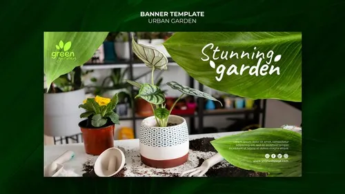
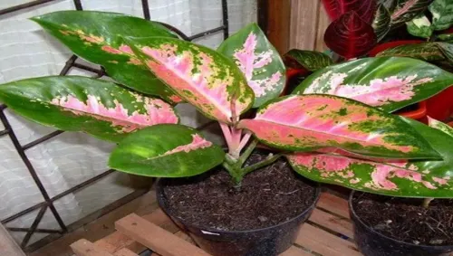
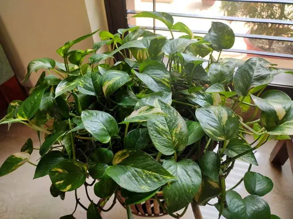

Toko Tanaman Hias
Toko Tanaman Hias
Toko Tanaman Hias
Toko Tanaman Hias

Find the perfect tanaman hias for your next adventure
.webp)
Monstera deliciosa adalah tanaman tropis asal Amerika Tengah yang dikenal dengan fenestrasi atau lubang alami pada daunnya yang lebar dan mengilap, sebuah adaptasi evolusi untuk memungkinkan cahaya matahari menembus ke bagian bawah tanaman serta menahan angin kencang di habitat aslinya. Tanaman merambat ini dapat tumbuh sangat besar di lingkungan yang lembap dengan cahaya matahari tidak langsung, serta memiliki akar gantung yang membantunya menempel pada pohon besar. Selain nilai estetikanya yang tinggi untuk dekorasi interior, Monstera juga relatif mudah dirawat dan memiliki kemampuan untuk menyaring polutan udara, menjadikannya pilihan favorit bagi penghobi tanaman hias.

Aglaonema merupakan tanaman hias daun yang berasal dari daerah tropis dan subtropis di Asia, dikenal karena toleransinya yang sangat baik terhadap kondisi cahaya rendah serta perawatannya yang relatif mudah. Karakteristik utamanya terletak pada variasi warna daun yang memikat, mulai dari kombinasi hijau, perak, hingga semburat merah dan merah muda cerah yang muncul akibat mutasi genetik atau persilangan. Tanaman ini tumbuh optimal di lingkungan dengan kelembapan tinggi dan suhu hangat, serta memiliki kemampuan alami untuk membantu membersihkan udara di dalam ruangan dari zat polutan seperti benzena dan formaldehida. Karena keindahan coraknya dan kepercayaan masyarakat bahwa tanaman ini membawa keberuntungan, Aglaonema tetap menjadi primadona bagi para kolektor tanaman hias maupun penghuni kost yang ingin mempercantik hunian

Sirih Gading merupakan tanaman merambat yang sangat populer karena ketahanannya yang luar biasa dan kemampuannya untuk tumbuh subur di berbagai kondisi lingkungan, baik di tanah maupun hanya dengan media air. Tanaman ini memiliki ciri khas daun berbentuk hati dengan corak variegasi kuning atau krem yang estetik, di mana intensitas warnanya sering kali bergantung pada jumlah cahaya matahari yang didapat. Selain berfungsi sebagai elemen dekorasi yang cantik saat digantung atau dirambatkan, Sirih Gading juga dikenal efektif dalam menyerap racun di udara seperti formaldehida dan karbon monoksida, menjadikannya pilihan tanaman indoor yang fungsional. Karena sifatnya yang sangat mudah dirawat dan sulit mati, tanaman ini sangat cocok bagi pemula yang baru mulai memelihara tanaman hias
.webp)
Anthurium crystallinum adalah tanaman tropis yang sangat dihargai karena keindahan daunnya yang berbentuk jantung dengan tekstur beludru (velvety) berwarna hijau tua yang kontras dengan urat daun berwarna putih keperakan yang menonjol. Tanaman ini berasal dari Amerika Tengah dan Selatan, tumbuh optimal di lingkungan yang lembap dengan sirkulasi udara yang baik serta cahaya matahari tidak langsung untuk mencegah daunnya terbakar. Keunikan visual dari pola urat daunnya yang simetris menjadikannya salah satu tanaman hias favorit untuk memberikan kesan mewah dan eksotis di dalam ruangan. Perawatannya memerlukan perhatian khusus pada konsistensi penyiraman dan media tanam yang poros agar akar tetap sehat dan tidak mudah busuk.
Atau hubungi via WhatsApp:
📱 WhatsApp: 082269298294